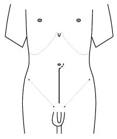

You are here: Urology Textbook > Urologic surgery > Lower midline incision
Lower Midline Incision
Urologic Indications
In urology, a lower midline incision is used for an extraperitoneal approach to the prostate, bladder and distal ureters. In case of unexpected intraoperative situations, a lower midline incision can be easily extended.
Preoperative Patient Preparation
- Patient positioning: supine position with slight hyperextension of the lumbar spine
- General anesthesia
- Perioperative antibiotic prophylaxis, if the urinary or gastrointestinal tract is entered or if risk factors for a wound infection are present.
Surgical Technique of a Lower Midline Incision
- Skin incision see fig. lower midline incision
- Cut through the subcutaneous fat tissue and expose the rectus sheat
- Division of the linea alba and fascia transversalis. Blunt dissection of the Retzius' space.
- Using blunt dissection, the peritoneum is pushed superiorly and medially to expose the iliac vessels, spermatic cord and ureter.
|  |
| Lower midline incision |
| Urologic Surgery | Index | Pfannenstiel incision |
Index: 1–9 A B C D E F G H I J K L M N O P Q R S T U V W X Y Z